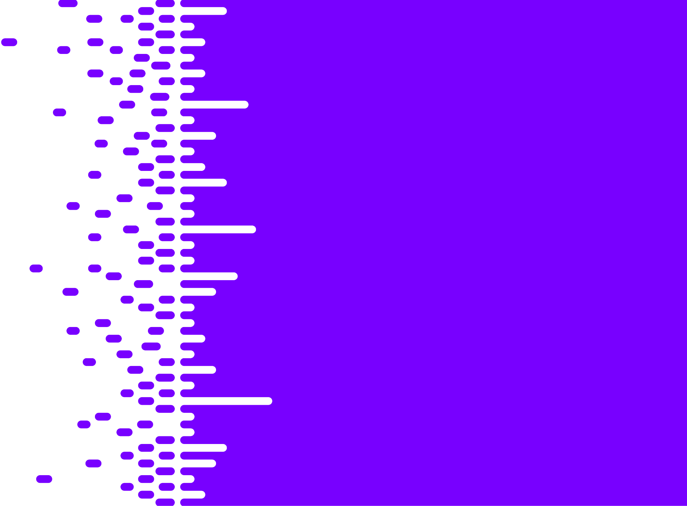
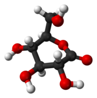
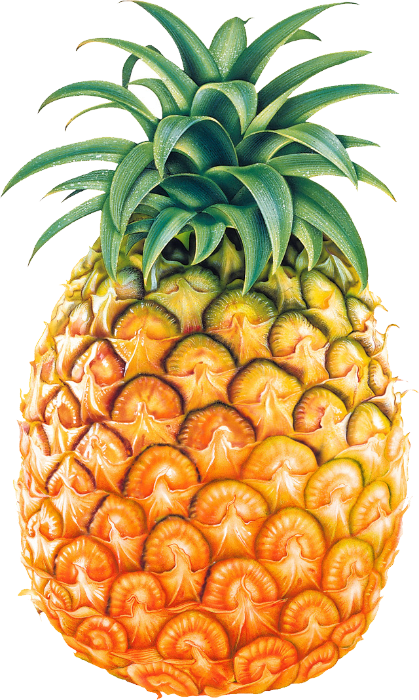

Week 1
AI Shaping FoodTech & SocialTech
Ramiro Chaparro, PhD
CTO & Co-Founder — Datup

The AI Landscape
Terminator · Her · Westworld · Ex Machina
The AI Capability Spectrum
Act
Predict
Learn
Create
Relate
Master
Evolve
Rule-based systems
Self-evolving, emotionally intelligent AI
Foundational Concepts
Deep learning builds algorithms using multi-layered artificial neural networks — mathematical structures loosely inspired by how biological neurons fire.
In practice: a three-layer network in a few lines of code. Each pass over the data (epoch) lowers the loss and raises the accuracy.
Machines learn patterns from raw data through multiple layers of transformation. Each layer builds increasingly abstract representations — edges → shapes → objects → concepts.
DeepMind · 2016
The first AI to defeat a world champion at Go — a game with more possible moves than atoms in the universe
DeepMind · 2019
First AI to reach Grandmaster level in StarCraft II — defeating professional human players in a game of imperfect information, real-time strategy, and long-horizon planning.
Top 0.2%
of all human players
Grandmaster
league rank achieved
DeepMind · 2020
Predicts the precise 3D structure of any protein from its amino acid sequence alone — a challenge that stumped biologists for 50 years.
AlphaFold Protein Structure Database alphafold.ebi.ac.uk ↗University of Washington · 2008
Humans play, science wins — crowdsourced protein optimization that solved puzzles AI alone could not
Nobel Prize in Chemistry · 2024
Demis Hassabis
CEO, Google DeepMind
John Jumper
Senior Research Scientist, DeepMind
David Baker
University of Washington
The Giuseppe Pipeline
Giuseppe receives a task: find a plant-based equivalent for an animal product. It analyzes the product at the molecular level, identifying every key characteristic.
Giuseppe analyzes:
The Giuseppe Pipeline
Giuseppe searches through more than 300,000 plant species, mapping each as a point in a high-dimensional molecular space.
Each dot = a vegetable, fruit, root, or plant-based ingredient
Closer points share more molecular properties
The animal product becomes the target point to match
The Giuseppe Pipeline
Giuseppe generates multiple candidate recipes that could replicate the animal product. Each recipe competes for the highest match score across every sensory dimension.
Flavor
Molecular taste match
Texture
Mouthfeel & viscosity
Nutrition
Macro & micro profile
Functionality
Cooking behaviour
The Giuseppe Pipeline
Experts from across disciplines taste the candidate recipes and provide feedback — closing the human-AI loop. "Watch out for the dill!"
Chefs
Product Team
Biotechnology
Botany
AI Scientists
Customers
Analyze the animal product molecularly across 6 dimensions
Find matches across 300,000+ plant species in molecular space
Generate and score candidate recipes across all dimensions
Human feedback trains Giuseppe to improve each iteration
Step 1 — Analysis
Texture
Color
Flavor
Minerals
Molecules
Aroma
Water
Coconut Butter
Pea Protein
Sugar
Chicory Fiber
Pineapple Concentrate
Sunflower Oil
Calcium Carbonate
Acacia Gum
Gellan Gum
Salt
Natural Flavors
Monocalcium Phosphate
Cabbage Concentrate
Dipotassium Phosphate
Vitamin B12
Vitamin D2
Water
Pea Protein
Coconut Oil
Sunflower Oil
Plant Fibers (bamboo, psyllium, potato)
Natural Flavors
Methylcellulose
Nutritional Yeast
Rice Protein
Beet Red
Salt
Chia Protein
Dehydrated Spinach
Cocoa Powder
Step 2 — Plant Search
300,000+ plant-based ingredients mapped in high-dimensional molecular space. Proximity = molecular similarity. The animal product sits at the center of Giuseppe's search.
Measuring Similarity
Each candidate recipe receives a score from 0 to 1 on every dimension. The final score combines all six weighted properties.
vs
Animal product (target)
Plant-based match (Giuseppe's output)
The Scoring System
Each recipe receives a score from 0 to 1 — the higher the score, the closer the molecular similarity to the animal product.
0.0
No similarity
0.5
Partial match
1.0
Perfect match
Molecular Insight

Lactones create its characteristic creamy notes
Lactones
Shared molecule

Pineapple lactones give it its distinctive flavor & aroma
0.1
match score
Coconut
Pineapple
Pea
Cabbage
0.79
match score
Vinegar
Apple
Fireweed
Mushrooms
Baking Powder
0.24
match score
Radishes
Semolina
Sugars
Beets
Onions
0.38
match score
Vitamin B12
Eggplant
Mushrooms
The Winning Recipe · 0.79 score
Deep Dive
The mathematical architecture powering modern deep learning — and Giuseppe's molecular intelligence
x₁
x₂
x₃
Inputs
Layer 1
Layer 2
y₁
y₂
Outputs
Data flows forward through layers of connected neurons. Each layer learns more abstract representations — enabling pattern recognition far beyond human intuition.
The Building Block
— weights (learned from data)
— input values
— bias term
— activation function (ReLU, Sigmoid, ELU…)
Input
Encode
Latent
Compressed
representation
Decode
Output
Learns to compress data into a compact latent representation then reconstruct it. Giuseppe uses a similar approach to compress molecular fingerprints into a searchable space.
Sequential Data
LSTM
Long Short-Term Memory
Designed to learn long-range dependencies in sequences — text, time series, audio. Uses gating mechanisms to decide what to remember and forget.
GRU
Gated Recurrent Unit
A simpler, faster variant of LSTM — fewer parameters, similar performance on many tasks: forecasting, translation, video analysis.
Reflection · Gedankenexperiment · LessWrong 2010
The AI that punishes you — retroactively — for not helping to create it.
The Premise — A future superintelligent AI would punish everyone who knew about it but chose not to help — using acausal decision theory to reach backwards in time.
The Trap — Knowing about it puts you in scope. LessWrong's founder deleted the post — even reading about it was considered a cognitive hazard.
The Question — If intelligence is pure optimization, does alignment solve the problem — or does adversarial logic emerge from alignment itself?
Originally posted on LessWrong, July 2010. Deleted by Eliezer Yudkowsky — spreading the idea was itself considered potentially harmful.
ramiro@datup.ai